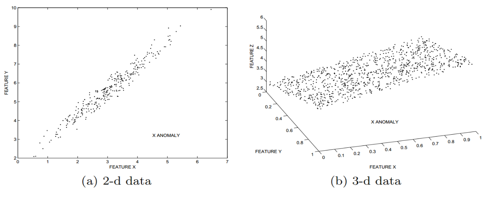

离群点挖掘简述
引言
离群点是一个或一组明显不同于其他数据的数据点。Hawkins把离群点定义为“离群点是在数据集中偏离大部分数据的数据，使人怀疑这些数据的偏离并非由随机因素产生，而是产生于完全不同的机制。”
在大多数应用中，数据由一到多个程序产生，这些数据可以反映出系统的运行状态和被监测客体的相关数值。当测量、输入错误或系统运行错误时，或者客体出现异常行为，离群点就会产生。因此，离群点经常包含关于系统与实体异常特征的有效信息。现有数据挖掘研究大多集中于发现适用于大部分数据的常规模式,在许多应用领域中，离群点通常作为噪音而忽略，许多数据挖掘算法试图降低或消除离群点的影响。而在有些应用领域识别离群点是许多工作的基础和前提，离群点会带给我们新的视角。如在欺诈检测中，离群点可能意味欺诈行为的发生，在入侵检测中离群点可能意味入侵行为的发生。其他的一些应用场景包括信用卡诈骗、医疗诊断、执法、地球科学……
离群点的检测算法输出可以是两种类型之一：
- 大多数离群点检测算法，输出一个关于数据点的“离群性”得分。这个得分可以用于分析数据点的离群趋势。
- 第二种类型的输出是表示一个数据点是否离群的二进制标签。一些算法可能直接返回二进制标签，但离群得分也可转换成二进制标签。
早期对离群点研究的主要目的是消除离群点，那时离群点一般被视为“噪音”，但随着离群点分析的流行，发现“噪声”中存在有趣的数据。在真实的应用中，数据可能嵌入了大量的噪音，但大部分噪音对于分析是无趣的。
如下图所示，在(a)中，A点明显不同于其余聚集的点，显然可以把A视为离群点，(b)中的A点也是数据中的稀疏点，但并不孤立。因此，术语“离群点”指的是一个数据点，这可以被认为是一个异常或是噪音，而一个“异常”指的是一种特殊的感兴趣的离群点。通常噪声和异常之间并不存在一个明显的界限。
本文在充分调研国内外离群点挖掘研究成果的基础上，介绍了离群点挖掘的研究进展，并概要地总结和比较了已有的各种离群点挖掘方法，展望了离群点挖掘研究的未来发展方向和面临的挑战。余下内容组织如下：第2节讨论典型的离群点分类；第3节；第4节；最后给出结论。
离群点的表示
由于应用的不同，数据表示也各不相同，可以是互不相关的高维数据，也可以是时间序列数据，或者是以图或网络形式存在的数据，数据本身也可以是数值形式、离散形式。几乎所有的离群点检测算法都是基于已有数据建立一个代表一般模式的模型，然后计算给定的数据点和一般模式的偏差，得出这个数据点的离群情况。而偏差的计算，与数据本身的数据表示密切相关。在一些情况下，离群点就是和大多数点距离比较大的点。
模型的选择至关重要，一旦模型选择有误，就可能导致对数据的理解出现误解。以Z值测试为例，给出一系列一维数值 \(X_{1}, X_{2},...,X_{n}\) ，它们的平均值 \(\mu\) 它们的标准差 \(\sigma\) 。与 \(X_{i}\) 相关的 Z 值的定义如下所示
Z 值测试计算了一个数和平均的偏离情况。当我们把 Z 值测试应用在图 (a)的一个维度上，我们发现Z值测试的结果是离群点A的偏差最小，这显然有问题，错误的模型选择将得到无效或错误的结果。在实践中，模型的选择通常是由对特定应用程序的理解所决定的。在选择模型之前，需要对数据有足够的了解。
下面将列举一些基本的模型，分别为极值分析、统计概率分析、线性模型、基于邻近的模型、信息论模型与高维离群点挖掘。
极值分析
极值分析是一维数据分析中最基本的离群点检测形式。规定值过大或过小的点为离群点。极值分析符合人们对离群点的传统认知，在一个一维数据集{1, 2, 2, 50, 98, 98, 99}中，1和99会被认为是离群点。为了解决冲突，极限值模型同时也使用概率模型量化生成概率为极限值。虽然极限分析是基于一维数据提出的，但也可以在多维数据上使用。在图 (b)中，B点可以被认为是极限值，因为它在多维数据集的外围区域，但a与b中的A点就不能认为是极限值，虽然它是离群点。
极值分析在离群点分析中扮演这重要的角色，在大多数离群点检测算法的最后一步得到广泛使用。大多数离群点检测算法用数值衡量离群程度，一些离群点检测算法会产出一系列离群得分，使用极限分析方法就可以统一成一个单一的值，或者产生一个二进制标签。
统计概率分析
这类方法大部分是从针对不同分布的离群点检验方法发展起来的，通常用户使用概率分布来拟合数据集，或者通过学习来获得模型的参数，比如可以使用Expectation-Maximization (EM)算法计算出分布的参数，关键在于选择出一个最贴近数据的分布。假定所给定的数据集存在一个分布或概率模型(例如，正态分布或泊松分布)，然后将与模型不一致(即分布不符合)的数据标识为离群数据，在早期也可以使用极限值分析选出概率模型中的离群点。
离群点检测的统计学方法具有坚实的基础，建立在标准的统计学技术(如分布参数的估计)之上，当存在充分的数据和所用的检验类型的知识时，这些检验可能非常有效。同时，各种不同的数据类型均可以统计概率进行建模。而统计概率分析的缺点就在于它试图把所有数据拟合到一个特定的分布，随着模型参数的增加，容易产生过拟合现象。基于分布的方法是假设数据符合某种分布规律，因而不适合分布未知的情形。同时，对于高维数据，很难估计真实的分布。
线性模型
线性模型使用线性关系将数据建模到低维嵌入子空间，在图(a)中，二维空间上的点可以看作沿一条斜线分布。
在图中，使用回归分析把二维空间对齐到一维的线上
公式中 \(\epsilon_{i}\) 代表余数，系数 a, b 需要从数据中学习得到，可以使用最小二乘法找出。获得的余数可以结合极值分析计算出离群点。线性模型处理的过程与 Principal component analysis (PCA) 相似，PCA 提供了一种降低数据维度的有效办法，如果分析者在原数据中除掉最小的特征值所对应的成分，那么所得的低维度数据必定是最优化的（也即，这样降低维度必定是失去讯息最少的方法）。因此，PCA可以用于噪声移除。
线性模型的缺点在于当数据维度很高时， 使用降维或回归模型会增加对数据原有属性的理解难度。
基于邻近的模型
基于邻近的模型就是评估点与其他点的孤立情况的模型，主要分为三类：
- 聚类分析
- 基于密度的分析
- 最近邻分析
在聚类分析和基于密度的分析中，密度大的点聚合作为常规数据点，而其余的数据点成为离群点。但两者的不同在于聚类算法分割点，而基于密度的算法分割区域。聚类分析中簇的定义通常是离群点的补，因此可同时发现簇和离群点。基于密度的离群点检测给出了对象离群程度的定量度量，对不同密度区域中的数据也能够很好地处理，解决了局部离群点的离群程度的度量和挖掘问题。
在最近邻算法中，有两种不同的策略：第一种策略是采用给定邻域半径，依据点的邻域中包含的对象多少来判定离群点如果一个点的邻域内包含的对象少于整个数据集的一定比例则标识它为离群点，也就是将没有足够邻居的对象看成是基于距离的离群点。第二种利用k最近邻距离的大小来判定离群使用k-最近邻的距离度量一个对象是否远离大部分点，一个对象的离群程度由到它的k-最近邻的距离给定 。这种方法对k的取值比较敏感。k太小(例如1)，则少量的邻近离群点可能导致较低的离群程度。k太大，则点数少于k的簇中所有的对象可能都成了离群点。
信息论模型
信息论模型提供了一种数据摘要的方法，在其中，离群点被定义为增加了描述数据的语言的最小长度，以下面的两个字符串为例
第二个字符串和第一个字符串的长度相同，唯一的不同点在于出现了一个单独的字符C，第一个字符串可以被简单描述为“AB重复了20次”，但第二个字符串就不能被这么简明的描述了，因为它出现了其他的字符C。字符C增加了描述数据语言的最小长度，因此可以把C作为离群点。
使用信息论方法挖掘离群点的基本方法为构造一本可以代表数据的字典，当一个数据点被移除后发现剩余数据的描述减少最多，那这个点可以被视为离群点。
典型的离群点分析方法
一般，无监督方法用于噪声移除或异常检测，有监督方法用于特定场景的异常检测
离群点分析现状
当前离群点研究的重点是高维大数据，时序数据……
高维数据中的离群点挖掘
高维空间中的离群点挖掘是离群点挖掘的一大挑战，从密度的角度考虑，在高维空间，数据变得稀疏，真正的离群点被淹没在大量的噪音之中。当数据维数增加时，常规的离群点检测算法的性能也会迅速下降。由于高维空间中数据的稀疏性，数据点之间几乎是等距离的，每个点在密度或距离的意义上都可以看作是一个离群点，对高维数据聚类几乎不可能，通常定义的离群点的概念也失去意义。
为了解决高维数据离群点挖掘问题，一种重要的方法是降维到低维子空间进行离群点挖掘。离群点通常隐藏在低维子空间的异常局部行为中，因此，需要寻找合适的子空间。降低维度产生子空间的技术主要包括投影变换和属性提取等方法。投影变换是将数据集从原 \(\delta\) 维投影到 \(d\) 维空间,其中 \(d\ll \delta\) ，并且每个新维是原始维的线性组合,然后在d维空间上利用传统的挖掘算法进行挖掘。如果高维数据向低维投影，离群点信息会丢失。在下图中，(a)(b)是高维空间的两个不同低维投影，可以看到，(a)中离群点A到(b)中就不再成为离群点。同时，高维向低维的投影数目和维数是指数相关的，计算复杂度非常高。所以说，无论是直接在高维进行离群点挖掘还是投影到低维进行离群点挖掘，都将变得十分困难。由于不同的子空间包含不同的离群点，因此可以使用一种集成的方法，同时进行数据特征选取和子空间探索，这将大大降低计算复杂度。
另一种减少维度的方法是特征选取方法。这种方法不用变换,而是从维度中启发式地选取一部分维,删除不相关或冗余的属性(维),目标是找出最小属性集,使得数据类的概率分布尽可能接近使用所有属性得到的原分布。这种方法避免了挖掘结果难以解释问题,并且由于属性数目的减少,使得模式更易于理解。
时序数据中的离群点挖掘
时序数据包含一系列按时间连续生成的值。因此，时序数据在相邻的两个时间点上一般不会出现很大的差别，总体呈现出连续光滑趋势。时序数据中的离群点可能就是一些突然出现巨大改变的值。
考虑以下如图的时序数据，明显有两个突然的跳变，一个是从3一下子变到87，另一个是86到3，然后又回到84，这两处即可视为离群点。
传统的时间序列离群模式挖掘一般有两种方法：一种是将时间序列分成等长的子序列,并将子序列映射为d维空间中的点,然后采用基于距离的挖掘算法发现离群点。这种方法的一个缺点是序列中的点一般较多，距离的计算和检测的时间消耗是相当可观的。另一种方法是从时间序列中抽取特征,通过计算特征序列间的距离来发现异常。
结束语
离群点挖掘可以应用在许多领域，比如兴趣发现，异常检测。本文在充分调研国内外离群点挖掘研究成果的基础上，介绍了离群点挖掘的研究进展，并概要地总结和比较了已有的各种离群点挖掘方法，展望了离群点挖掘研究的未来发展方向和面临的挑战。
参考文献
- 薛安荣, 姚林, 鞠时光, 陈伟鹤, 马汉达. 离群点挖掘方法综述. 计算机科学. 2008;35(11):13-8.
- Aggarwal CC, Yu PS. Outlier detection for high dimensional data. InACM Sigmod Record 2001 May 1 (Vol. 30, No. 2, pp. 37-46).
- Han Jiawei。Micheline K.Data mining:concepts and techniques.3th edition.San Francisco..Morgan Kaufmann Publishers,2012
- 魏藜, 宫学庆, 钱卫宁, 周傲英. 高维空间中的离群点发现. 软件学报. 2002;13(2):280-90.
- Aggarwal CC, Yu PS. Outlier detection for high dimensional data. InACM Sigmod Record 2001 May 1 (Vol. 30, No. 2, pp. 37-46).
- WU, Shu, WANG, Shengrui. Information-theoretic outlier detection for large-scale categorical data. IEEE transactions on knowledge and data engineering, 2013, 25.3: 589-602.
- 张净, 孙志挥, 宋余庆, 倪巍伟, & 晏燕华. (2011). 基于信息论的高维海量数据离群点挖掘. 计算机科学, 38(7), 148-151.